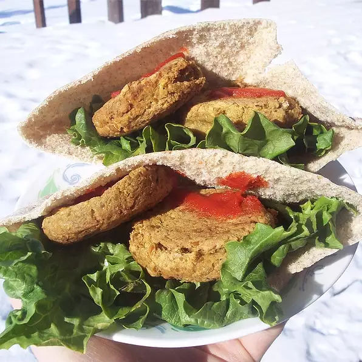

Baked Falafel

Description
An easy, yummy way to make falafel. Serve with pita bread and your favorite tzatziki.
Ingredients
- ¼ cup chopped onion
- 1 can garbanzo beans, rinsed and drained
- ¼ cup chopped fresh parsley
- 3 cloves garlic, minced
- 1 tsp ground cumin
- ¼ tsp ground coriander
- ¼ tsp salt
- ¼ tsp baking soda
- 1 tbsp all-purpose flour
- 1 egg, beaten
- 2tsp olive oil
Steps
- Wrap onion in cheese cloth and squeeze out as much moisture as possible. Set aside. Place garbanzo beans, parsley, garlic, cumin, coriander, salt, and baking soda in a food processor. Process until the mixture is coarsely pureed. Mix garbanzo bean mixture and onion together in a bowl. Stir in the flour and egg. Shape mixture into four large patties and let stand for 15 minutes.
- Preheat an oven to 400 degrees F (200 degrees C).
- Heat olive oil in a large, oven-safe skillet over medium-high heat. Place the patties in the skillet; cook until golden brown, about 3 minutes on each side.
- Transfer skillet to the preheated oven and bake until heated through, about 10 minutes.